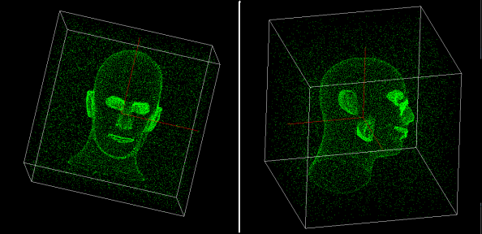
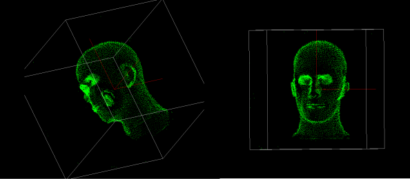
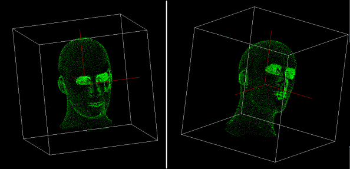

Outlier Rejection
Summary
This project helps to solve the problem of noise removal using the tensor voting approach given in method in [1]. This project is a part of COMP-5421 (Computer Vision Course) at HKUST taught by Dr. C. K. Tang during the spring term (Feb-May'2014).Input noisy images with two views::
 Inferred surface tensors::
 Denoised image
 References
[1] Tang, Chi-Keung, Gérard Medioni, and Mi-Suen Lee. “N-dimensional tensor voting and application to epipolar geometry estimation.” Pattern Analysis and Machine Intelligence, IEEE Transactions on 23.8 (2001): 829-844. [2] Wu, Tai-Pang, et al. “A closed-form solution to tensor voting: Theory and applications.” Pattern Analysis and Machine Intelligence, IEEE Transactions on 34.8 (2012): 1482-1495. Download
• Source code of the project can be found here. • All Datasets : [DOWNLOAD]